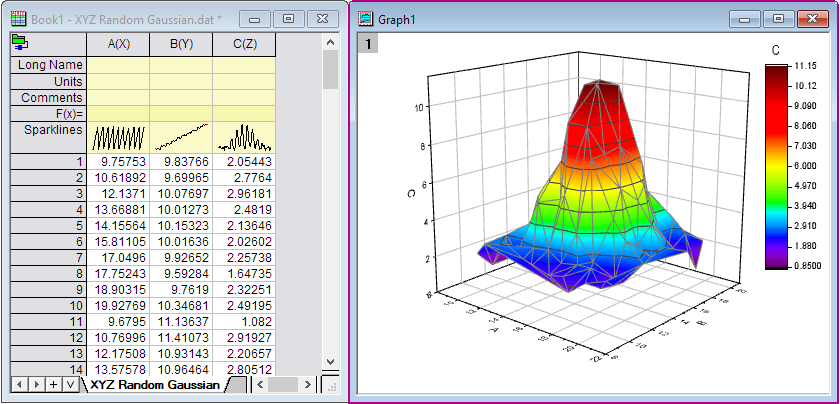
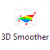
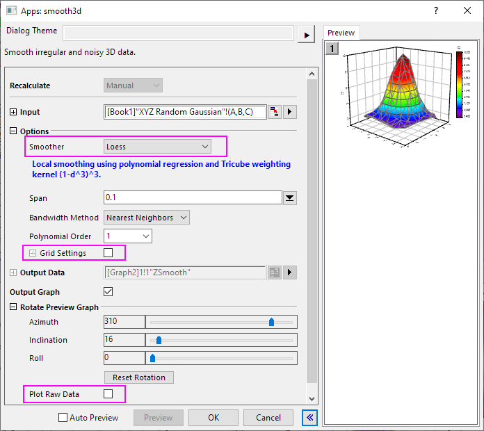
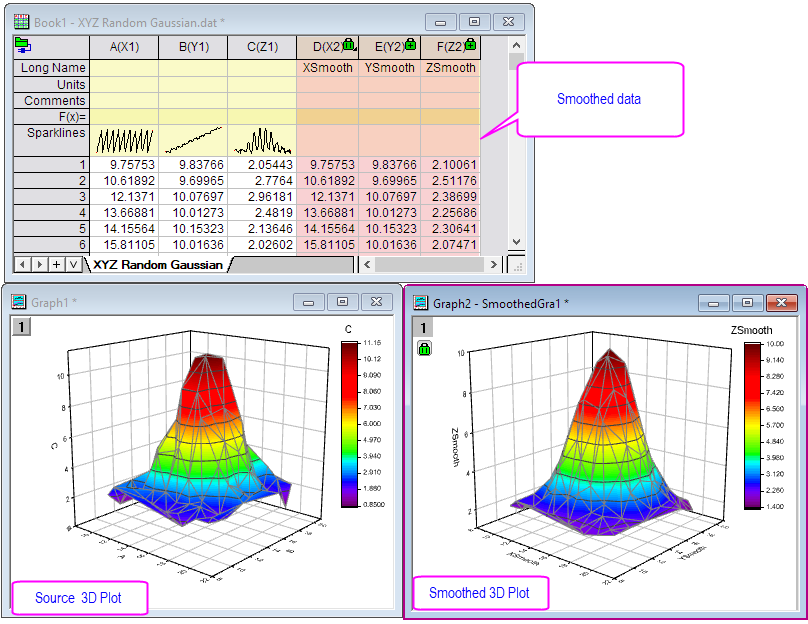

3Dスムージング
3D-Smoother
概要
3D Smootherアプリは、XYZ列または行列からの3Dデータを滑らかにするために使用できます。
チュートリアル
- < Origin EXE Folder>\Samples\Matrix Conversion and Gridding\フォルダからXYZ Random Gaussian.dat インポートします。
- ワークシートの列Cを右クリックし、コンテキストメニューから列XY属性の設定：Z列を選択します。ワークシートのすべての列を選択し、作図：3D：3Dカラーマップ曲面メニューを選択して3D曲面プロットを作成します。さて、この3D曲面を滑らかにします。

- ワークシートのすべての列を再度選択し、Originのアプリパネルから3Dスムージングアイコンを

クリックして、アプリケーションのダイアログボックスを開きます。
- ダイアログで、スムージングメソッドとしてLoessを選択します。グリッド設定およびローデータをプロットオプションのチェックを外します。OKをクリックします。

- 平滑化されたデータと3Dプロットが出力されます。
